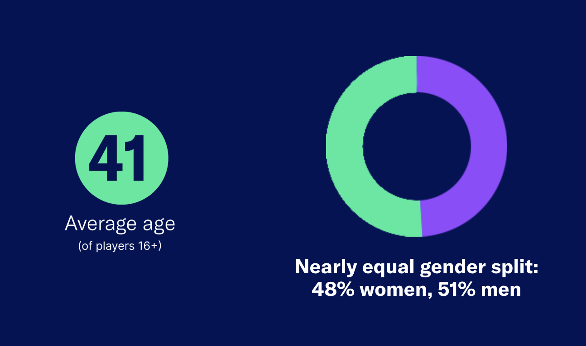
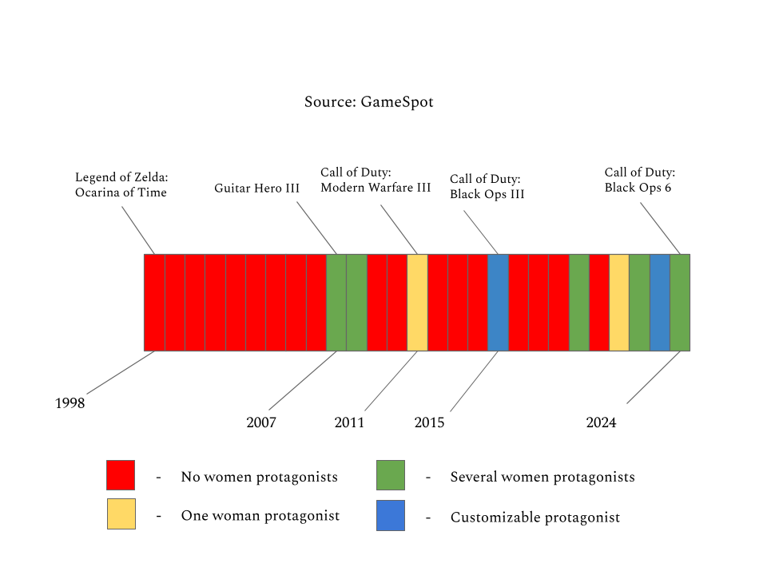
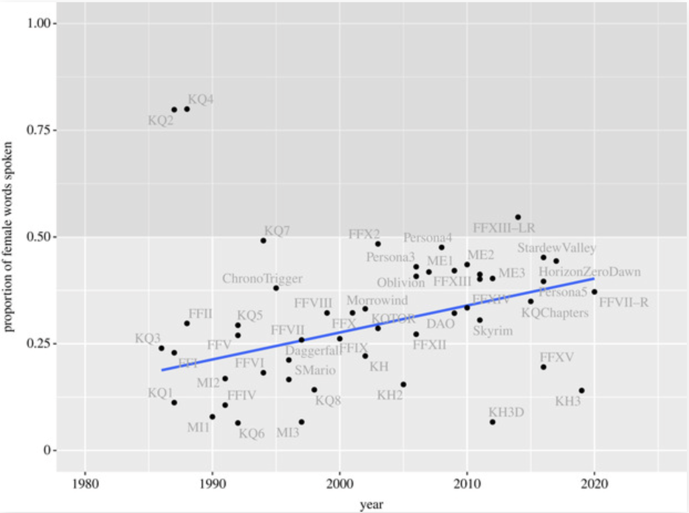
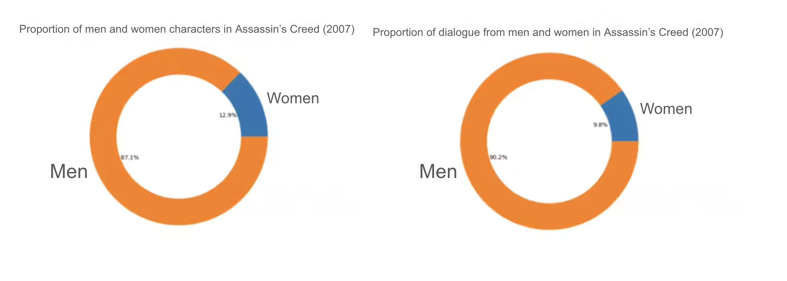
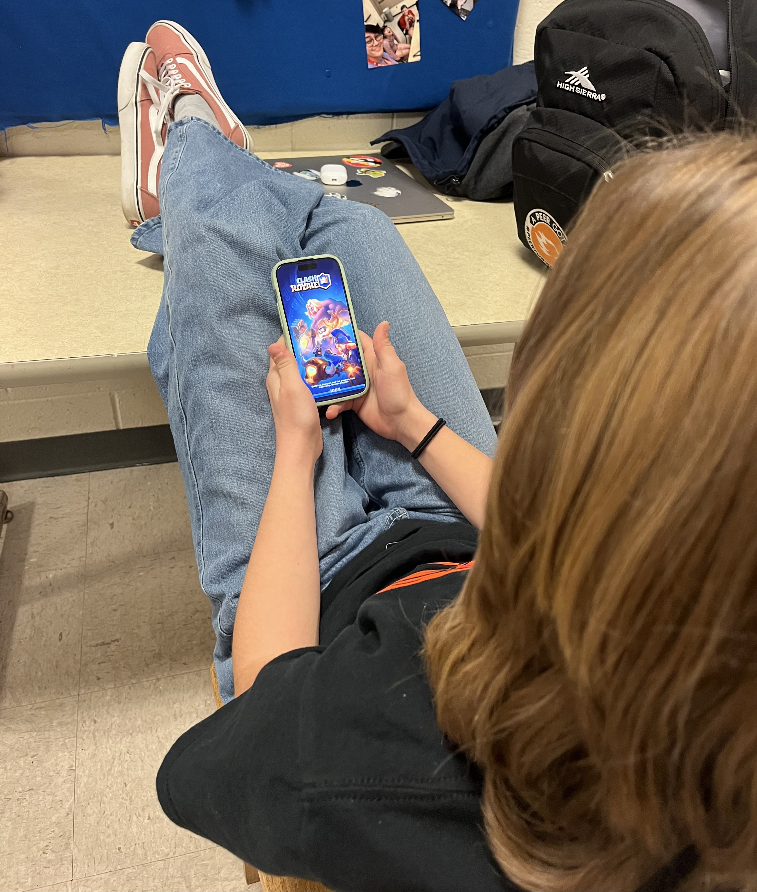

The gender breakdown of gamers is always changing - but what about the characters they play?
Studies have shown for years that women are a massive component of the video game market - making up more than half of American gamers, according to a 2025 Entertainment Software Association study. But data shows that, despite significant progress, playable characters and protagonists in top-selling video games aren’t quite indicative of the people playing them.
To find out just how much change has been made in the past few decades, I compiled the top 10 video games from the years 2005 and 2025 and compared the gender of their protagonists. The results were largely stagnant - about 4 in 10 of the top games in 2005 featured a woman protagonist or playable character (PC), as compared to 3 in 10 in 2025.

A little bit more progress can be seen when comparing the top-selling game from each year since 1998. This breakdown shows that more women and customizable options are available in newer top-selling games - but not nearly on par with the notion that half of all gamers are women. It’s also important to note that, though many games do include women protagonists or PCs, it’s common to see just one or two woman character options presented in a sea of men characters.
If there’s so many women gamers, shouldn’t the video game industry focus on appealing to them more by creating women characters? Things get a little more complicated when looking at the discrepancy between women who play video games and women who consider themselves “gamers.”
According to a 2024 Bryter study, more than 25% of women are more likely to consider themselves “casual games” or reject the label of “gamer” altogether because of widespread verbal and sexual abuse from men in gaming spaces.
59% of women report experiencing toxicity from men gamers, where 26% of women have experienced sexual harrasment and 12% have received rape threats. This abuse is the reason women are underrepresented in multiplayer and online video game communities, the study posits.
Another part of the issue with tackling women representation in video games is that women are underrepresented first in sports - a genre which frequently tops best-seller lists. Of course you can’t play as a woman in Madden NFL or NBA 2k26, because they’re not part of these industries (unless you buy the WNBA version of the latter). One of the genres that has seen significant progress is role playing games, or RPGs. Based on the numbers from above, RPGs have consistently seen more games with customizable or woman PCs in recent years than other game genres.
Well, the characters might be women, but it doesn’t mean they’re represented as well as men. A study published by Royal Society Open Science found that 94% of all video games feature more dialogue from men characters than women characters.
Even in RPGs with prominent women characters, they generally had half as much dialogue as men characters - even in games where the protagonist is a woman. Though women characters, just like overall representation, have seen a steady rise over the past few decades, the discrepancy is still incredibly vast.
There’s also the issue of how women are represented once they make it into a game. A study published by the EDHEC Business School analyzed scripts from two popular video games - Assassin’s Creed from 2007 and The Witcher 3 from 2015 - and found that in addition to less dialogue, women characters were also limited to 14 occupations in comparison to men’s 64 and were more likely to be placed in passive or sexualized roles such as nurses and courtesans.
The obvious answer is to promote more diverse representation in an industry that has historically struggled with minority storytelling. But there’s also the money question - video game manufacturers should be striving to appeal to women as a massive untapped market within the industry. By striving to be more representative of a variety of experiences and backgrounds, game manufacturers can ensure a more robust and diversified customer base.
